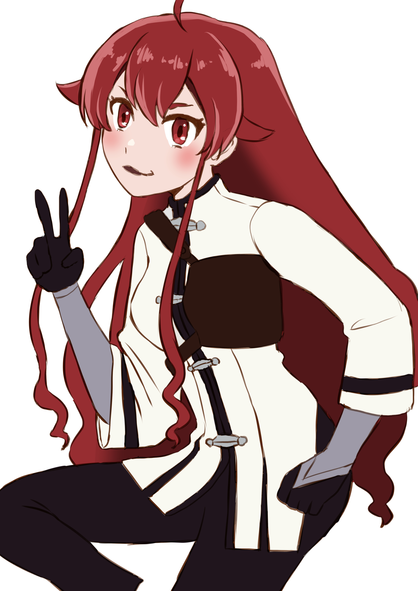
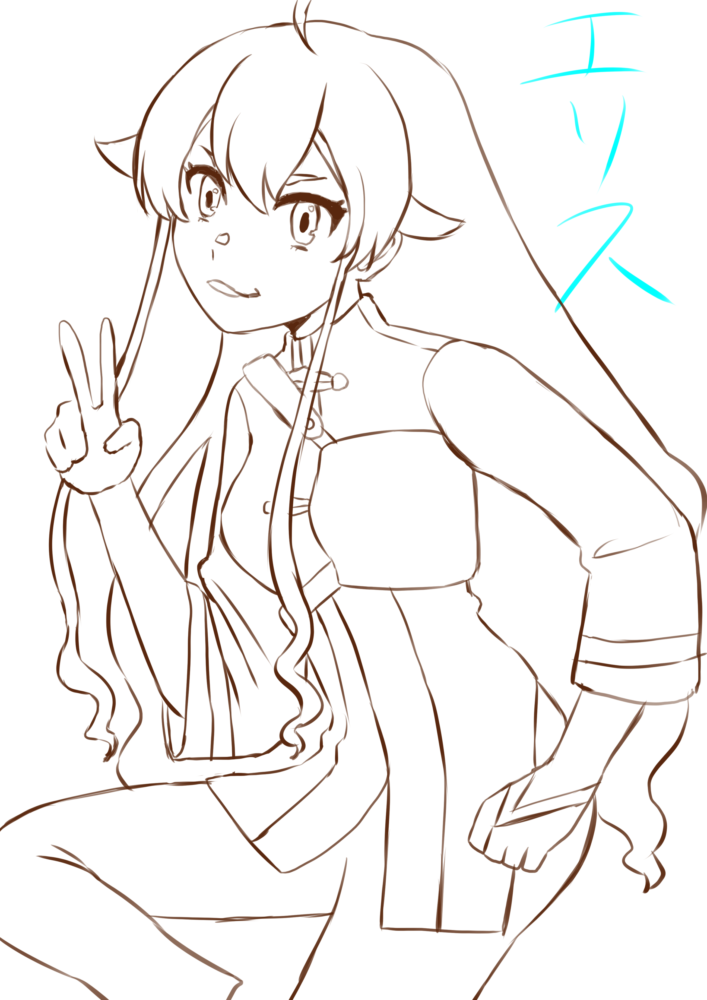
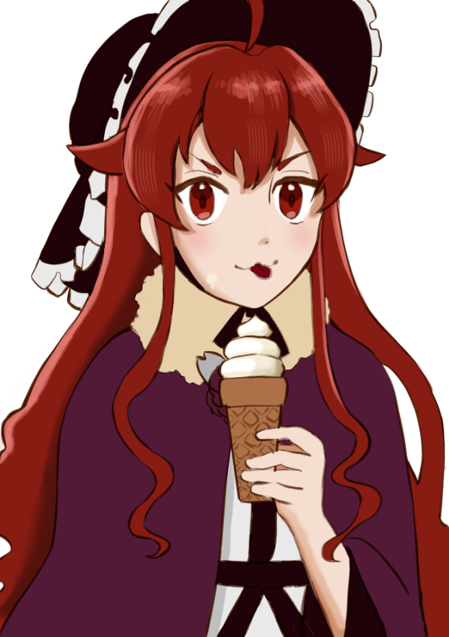

無職転生の絵のアイコンの人がいいねしてくれたときに「他にどんなイラストのいいねしてるんだろう」って自分の絵柄分析のために見るんだけど、 18禁のイラストだらけだったときに爆笑。ほぼ閲覧できない。エロは偉大だなって。
ルーデウスってひきこもりのときに誰にも助けてもらえなかった過去 （前世で親友にヒステリック起こしたら二度と家に来てくれなかった）があるから ナナホシがヒステリック起こしても助けてあげたいって思ったのかなと思った。 「見捨てたくない」って気持ちが強いのかなって。

エリス 色塗り冒険の後半でワイルドになってくエリスが好きでこのときの衣装でイラスト描いてる。 ちなみにこの衣装を探してたらデビルエリスも見つけてしまい、そのイラスト描きたくて資料集めてる（笑）

エリス 描きかけヤバい。11話鬱展開きた。ネットに投稿されてたのをサラっと読んだことあるからちょっと知ってるんだけど、これからけっこう鬱展開なんだよね。でもこの鬱展開が過ぎたらいろいろな人が再登場するから楽しみ。
９話はナナホシ回。上手くいきかけてたときに病気になるとむしゃくしゃするの分かる。ナナホシにとっては孤独な土地だから辛いんだな。しかも同じ国から来たルーデウスが上手くいってたら嫉妬する。ナナホシがあんな状態になってるの見ると「そんなことで落ち込んでるの？」って思うかもしれないけど、辛いことがあったら人間あんなもんだし、誰にも当事者の気持ちは分からないんだよな。
８話はペルギウス回だった。私の想像してたペルギウスがまんま絵になってた。眉間に皺が入ってる屈強な男。うわ～平和な時間～幸せそうでいいね～うんうん……ってところでガクッと落とされた……。
ルーデウスの一夫多妻が気になる人いるらしいけど、そこまで気にならないな。批判されるだろうなとは思ったけど、異世界の話だからなんでもありなんだなくらいにしか思わなかった。ただ「早く旅しろよ」とは思った（笑）バトルが見たい。
ギャラリーのイラストのコメントがバラバラになってた！すみませんでした。
シーズン３の５話観たんだけど、流石にルーデウス変態すぎる（笑）こういうのが子供向けじゃないって言われる所以なわけだな。
「無心で剣を振り続けて疲れたら座って考えろ」ってすごく良いセリフだな。そう、なにを練習するのも無心でいいんだよ。疲れたら考えればいい。今回は脚本が最高。
小説無職転生の１巻読んでるんだけど、リーリャの過去編がちょっとあって、リーリャが近衛兵だったって初めて知った。意外と強いんだな。そういえばリーリャが歩いてるところあんまり見ないなって思ったけど、負傷してたのね。
自分が思う３ヒロインの魅力
エリス⇒粗がいっぱいあるけどルーデウスと一緒に成長していく姿
ロキシー⇒憧れの女神的存在なのに可愛い欠点もある
シルフィ⇒完璧すぎて粗がないけど悲しい生い立ちがある
家庭教師から魔大陸までの少年編が好きなんだけど、結局私はエリスが好きなのかもしれない（笑）でもロキシーも好きなんだよな～。ロキシーのファンアートも描きたい。シルフィも好きだけど、ロキシーとエリスほど「好き！！！！」って感じじゃないんだよな。シルフィは完璧すぎる。
無職転生の小説の途中まで読んだけど、「そういうことだったのか！」ってことがある。主人公が最初に学生をトラックに撥ねられそうにところを助けようとした描写とか。でも物語を分かりやすくするためにアニメは上手く省いてるんだなって思った。
まじで３期楽しみ。１期が神作画だったから、３期どうなるか。
アイシャは可愛い。なんか女の子としての可愛さというか、妹としての可愛さっていう。ワシャワシャしたくなる可愛さ。しかも、これで優秀っていうね。
一番好きなのは断然エリス。でもロキシーも好き。ロキシーのファンアート描きたいな。
一番好きなのは魔大陸編かな。エリスも活躍するし、ルイジェルドも好きだし。学校編がちょっと好きじゃなくて、やっぱりルーデウスには旅しててほしいってのがある。
パウロ良いキャラだよな。パウロの色男っぷりには舌を巻きますわ。父親としてもめっちゃ良いよな。欠点って誰にでもあるからね。でもパウロの欠点はクズってところだし、クズな父親ってちょっと嫌かな……。でもすごい頼れるところもあるんだよね。一筋縄ではいかないな。
よっしゃ！！ 本買ったから１巻から読むぞ！！ キャラとかどういう違いがあるんだろう。もうちょいキャラの掘り下げとかあるのかな。
エリス好きすぎて草。めっちゃエリス描いてる。エリスみたいに思ったことを思ったように生きてみたい。

エリス 描きかけ12話でのエリスの戦い方が卑怯すぎる（笑）一旦砂かけて魔眼を持ってるルーデウスに目くらまししようとしてルーデウスに避けられる。まあ、でもそういう卑怯な手も必要だよね。
８話でルーデウスが〇毛を床に捨てるところ、嫌すぎる。ゴミ箱に捨てなさい！（笑）
この表情なんなんだろう。分からないけどめちゃくちゃ好き。言語化しようとするほど逃げていく。
OPの入り方が毎回ずるい。あの瞬間に音楽が来るの計算されてると思う。スキップできない。
ファンアートを描き始めた。うまく描けなくてもいいから残したい。そういう気持ち。
2周目に入った。同じシーンなのに受け取り方が全然違う。伏線が分かった上で見るとしんどさが倍になる。
エリスのことをずっと考えている。どういう気持ちであの決断をしたのか、原作読んでも答えが出ない。
このサイトを作り始めた。「好き」をちゃんと残したくなったので。